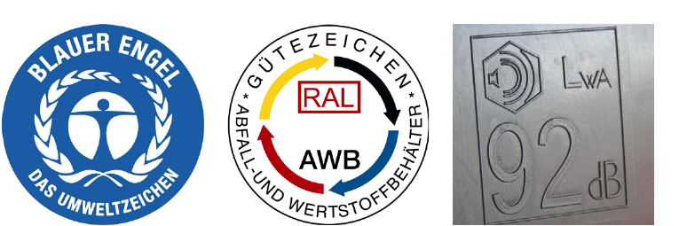
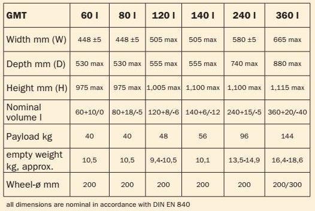
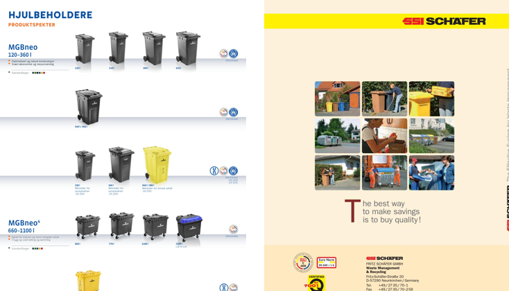

DR-002
Document review · 9 October 2026
Published container catalogues,
read as a tender attachment.
Both catalogues of wheeled containers published by Namdal Ressurs — SSI Schäfer and Craemer — were read against the requirement specification in Bilag 2. Nothing here is a score. The buyer scores.
Method
Bilag 2 sets sixty numbered requirements. Twenty-six ask for a delivery plan, an option price or a complaints procedure, which no catalogue answers. Thirty-four remain.
Answered means a reader can verify it today. Partial means the subject is raised and not committed to. Absent means there is nothing to point at.
The count
Five of
thirty-four
can be
answered.
Krav 1, 7, 11, 13, 24. Make, dimensions, the two-wheel sizes, exchangeable lids.
Krav 2–6, 8–10, 14, 15, 17, 18, 22, 23, 26, 27, 41, 46. Raised, never committed to.
Krav 12, 16, 19–21, 25, 28, 47, 57, 58, 60. No recyclate, no spare parts, no REACH.
Twenty-eight of the thirty-four ask the supplier to confirm or describe. This is what an evaluator can verify from the published material behind those answers.
Findings / Sheet 2
DR-002
Four things an evaluator meets first.

Finding 01 / Krav 57, A · climate 30 of 100
One page, two materials.
«Für die Produktion der Kunststoffbehälter kommt dabei ausschließlich sortenreines PE zum Einsatz.»
Lower on that page, up to 90 per cent recyclate and the Blue Angel on request. The Norwegian overview has neither.

Finding 02 / Krav 14 and 5, both A
The 1,000 litre is a different lift.
«Beholdere på 4 hjul skal være 660L og 1000L.»
The only 1,000 in 106 pages sits in the range the catalogue offers instead of a comb lift, dimensioned to DIN 30760.

Finding 03 / Krav 18, A
Two hundred where the krav says 250.
«…minimum diameter 250 mm (tohjuls) og 200 mm (firehjuls).»
The 80, 140 and 240 are tabled at 200 mm; only the 360 offers 300. On the four-wheel containers the krav is met.

Finding 04 / Krav 2, A
Neither of these is a product sheet.
«Det vedlegges produktblad / brosyrer over beholderne.»
Four pages carrying no dimension, weight or wheel figure at all, and a general catalogue published in 2019.
The recyclate figure already exists. It is in the manufacturer's own German brochure and not in the Norwegian one.